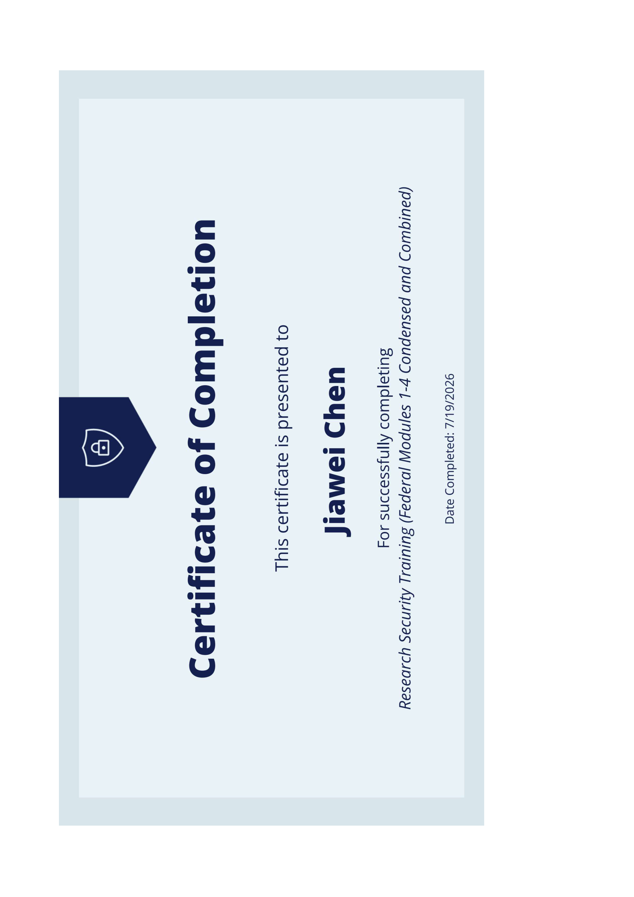
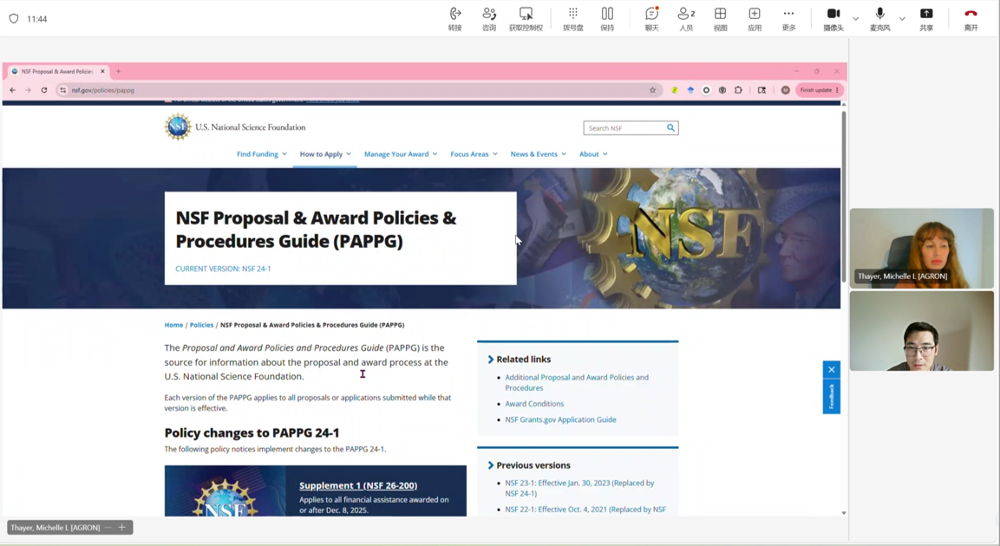
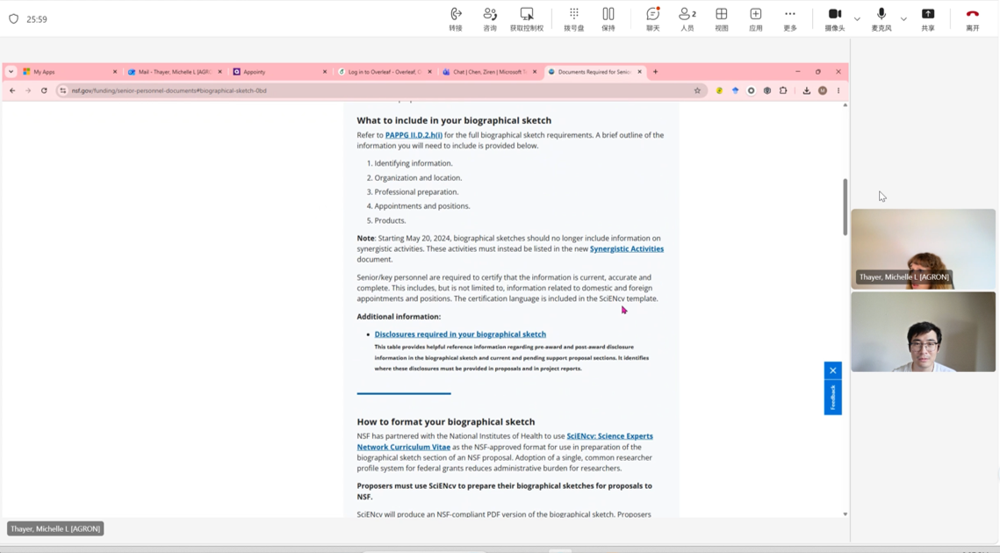
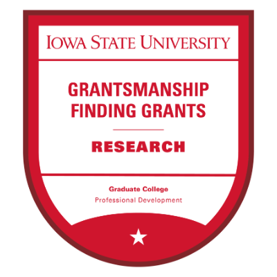

Activities related to research funding, proposal development, and teaching at Iowa State University.
I have created an NSF Research.gov account, and my role as PI has been approved by Iowa State University. Also, I completed the Research Security Training required by Iowa State University, covering export control regulations, research integrity, and national security considerations relevant to federally funded research.

Certificate of Research Security Training, Iowa State University.
I completed the Center for Communication Excellence (CCE) Grantsmanship Summer Intensive at Iowa State University, a self-paced microcredential program organized around two badge levels that together cover the full grant-writing lifecycle. Badge Level 1, Finding Grants, took me through surveying the funding landscape and navigating funder databases, determining eligibility and competitiveness for nationally competitive awards, and psyching the funder by aligning a proposal's framing with a program's stated values and priorities. Badge Level 2, Preparing Applications, moved into drafting the research or purpose statement, writing an effective personal statement, and achieving cross-component cohesion and strategic framing so that every section of an application reinforces a single narrative. Along the way, I built a project Gantt chart, responded to a mock Funding Opportunity Announcement, and drafted a short list of target funding opportunities matched to my research. I also completed a series of one-on-one consultations with CCE staff at each stage of the process, from funder-database navigation through final draft review, before submitting my application materials for review.

Online discussion session during the program.

Online discussion session during the program.

CCE Grantsmanship Microcredential digital badge.
As Principal Investigator (PI), with my advisor serving as Co-PI, I prepared and submitted a research proposal to the National Science Foundation's Computational and Data-Enabled Science and Engineering (CDS&E) program, requesting funding to support research at the intersection of computational and data-driven methods in fluid dynamics.
I believe fluid dynamics is best learned by treating physical intuition and computation as two views of the same problem, not two separate skills. My own path – from classical turbulence model derivations at Tsinghua to building agentic-AI and generative-AI tools at Iowa State – taught me that students only trust a CFD result once they can predict, by hand, what it should look like, and only trust the underlying physics once they see it reproduced numerically. I organize my teaching around this loop: introduce a physical mechanism, have students estimate its behavior, then let them verify or challenge that estimate with a simulation. This builds computational and physical reasoning together, rather than letting one become a black box that produces the other.
I am actively and deliberately building my formal classroom teaching experience. For Fall 2026, I have been accepted into Iowa State University's Preparing Future Faculty (PFF) program. Through this program, I will design job and course materials in hands-on workshops (GRST 5850). I will also attend seminars on balancing teaching, research, and service. Additionally, I will meet twice a month with a tenure-track faculty mentor for guidance throughout the semester.
I also have extensive experience in one-on-one mentoring. From 2024 to 2025, I served as a Postdoc in the Department of Mathematics at UT Arlington. During this time, I mentored Ph.D. student Emran Hossen on CFD and turbulence modeling for his dissertation. He summarized our work and presented it at AIAA SciTech 2025. Emran has since moved on to a postdoctoral position at Michigan Technological University. This experience taught me to guide students toward independence by asking insightful questions rather than just providing answers. It is an approach I look forward to using with future graduate students and in undergraduate office hours.
Core/Undergraduate: Fluid Mechanics; Introduction to Aerodynamics; Numerical Methods in Aerospace/Mechanical Engineering.
Graduate/Elective: Computational Fluid Dynamics; Turbulence Modeling and Simulation; Agentic AI and Generative AI for Fluid Dynamics.
My publications in turbulence modeling, vortex identification, generative AI and agentic AI directly support these graduate electives. Furthermore, I am uniquely qualified to develop the AI-focused course into a new offer as the field evolves.
Students often enter with diverse math and coding backgrounds. To make the course accessible to everyone, I pair each analytical derivation with a hands-on computational example—such as matching a hand-derived boundary-layer estimate with an OpenFOAM case. Long term, I plan to develop a novel course on generative AI and LLM agents for turbulence modeling. Drawing from my experience running high-performance jobs on the TACC and Nova clusters, I aim to ensure students graduate with direct experience executing large-scale simulations—not just describing them.